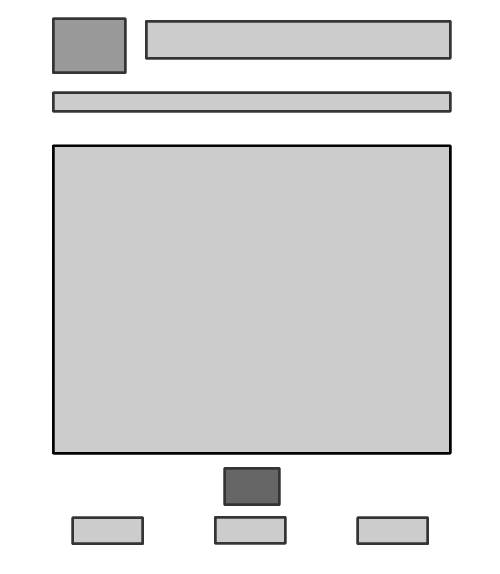

Homepage made in Fireworks

This is the homepage I made with Fireworks
strengeths of using fireworks
- able to create differnent shapes easily
- easy to show colors
- easy to move pictures and texts around
weakness of using fireworks
- need to create another box to type
- slicing might create extra images, which leds to increase of file size
- Inserting pictures requires more clicking
In conclusion, I think Fireworks is more suitable at the planning stage of making a storyborad. Since it is very convinient to change the layout/graphics on the storyboard.
Also, Fireworks allows us to put our content in a numeriacal form, which makes it easier for us to do when creating AP Divs when using Dreamweaver to create the storyboard.
Home page made in Dreamweaver
This is the homepage I made with Dreamweaver
strengeths of using Dreamweaver
- easy to change shapes numerically(increase accuracy of sizes)
- Applying coding skill can help with formatting
- easy to change background with the page property option.
weakness of using Dreamweavers
- difficult to position pictures and text(by px)
- takes more clicking to change colors
Feedback from client
- He likes the arrangement of the contents and links
- He decided to leave the decision of graphics us but will also give us feedback from time to time
Creating templetes
Most recent flowchart

- message of the site
- To let the audience know they'll be able to learn and practice their skill on kinematics on the site
- theme
- science, classroom, learning
- fonts
- We choose comic sans since it is a more hand-writing style font, creating a feel for the audience of they have to put their hands on the work.
- background
- We choose a chalkboard doole image since a chalkboard would help the students to relate to classroom and learning, which is our theme. Also the dooles are related to the topics discussed in the site.
- essential element on each page
- home botton - for a convinient navigation through the site
- navigation bar - allows the audience to move from subpages to subpages easier
- title and logo of the site - to keep consistacy with the index page and let the audience know they are in the same website and therefore not distracted
Sitemap
- homepage
- Concept
- Application
- Conclusion
Ideas for tempelete
description and planning for storyboard
- This wireframe contains a navigation bar on the top of the page for the audience to link to other subpages on the site
- The audience would know which subpage they are on since the page title will be highlighted with a different color on the navigation bar
- The font used will be consistant throughtout the pages to avoid distractions
- A homepage botton is placed at the bottom of the content, so the audience can go back to the homepage, if desired, after reading the content of the page without scrolling back up to the top fo the page
- The placement and the color of the icon and the title is consistant with the homepage
Making Tempelete for subpages
This is a wireframe for the subpages
Creating Tempelete using Dreamweaver
This is the tempelete created with dreamwearver
Only the big square in the middle is editable
self-review notes
- links doesn't work - find the problem
- Problem solved: folders and files arrangement. The links that I created earlier actually links to another folder therefore it won't work.
- homepage - the word "application" went over the "2" image and blends in with the background
- Problem solved: hyperlinking the text changes it's color therefore creates a contrast from the background